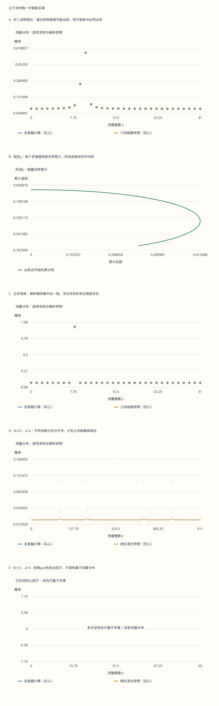

本页目录
量子信息 II · 干涉、查询与量子算法
前置：量子位与纠缠、复数与酉矩阵、最大公因数。目标：从一个可计算的振幅出发，追踪到测量分布与可验证的经典输出。Grover、相位估计和Shor分别利用什么信息、花费什么资源，要逐步分清。
先想一个具体问题：如果只在频率图上读到一个峰，为什么还不能立刻把它的倒数叫作周期？本页先让两个反射产生可见的概率振荡，再让一组相量形成频率峰，最后跟踪连分数里的每一个候选。失败分支与成功分支使用同一套算术。
1. 同一个问题，先约定什么叫成功
Deutsch–Jozsa 的承诺是恒常或平衡，输出只有这一个全局性质。确定性、零错误经典算法最坏要问 \(2^{n-1}+1\) 个不同输入：少问时，全同的答案仍可以补成平衡函数。辅助位取 \(|-\rangle\)，一次 \(U_f\) 把 \((-1)^{f(x)}\) 留在输入的相位上。第二次 Hadamard 后，全零振幅为 \(2^{-n}\sum_x(-1)^{f(x)}\)，恒常时为 \(\pm1\)，平衡时为零。
允许错误则比较改变。对平衡函数独立、有放回取 \(t\ge1\) 个输入，全部同号的概率恰为 \(2(1/2)^t=2^{1-t}\)；恒常函数不会被判错。因此 \(t\ge\lceil1+\log_2(1/\delta)\rceil\) 即可把错误压到 \(\delta\)。固定错误率下是常数次查询，不能把前一项零错误分离改写成对所有经典算法的指数下界。
2. 两个反射怎样形成旋转
在正交的 \(|G\rangle,|B\rangle\) 基中，\(|s\rangle=(\sin\theta,\cos\theta)^T\)，\(\sin^2\theta=M/N\)，\(O=\mathrm{diag}(-1,1)\)。计算 \(D=2ss^T-I\) 后得到
这个坐标顺序下矩阵是通常平面角的负向旋转；向量从 bad 方向向 good 方向靠近。不要只看“旋转”二字而忘记基序。成功率是 good 子空间的总概率 \(\sin^2((2k+1)\theta)\)，并非单个 marked 态的概率。
3. 为什么要在首峰附近停下
连续首峰位于 \(\kappa=\pi/(4\theta)-1/2\)。只比较非负的 floor/ceil 两个整数，选择较好者；最近整数与 \(\kappa\) 相差至多 \(1/2\)，故角度误差至多 \(\theta\)，首峰失败率至多 \(\sin^2\theta=M/N\)。当 \(M\le N/2\) 时这给出至少 \(1/2\) 成功率；重复并验证候选即可提高成功率。当 \(M>N/2\) 时经典随机抽一个已具常数成功率，不应套用“任何情况都需要很多Grover轮次”的说法。\(M=0\) 没有 good 态，\(M=N\) 没有 bad 态，二维基的定义在这些端点必须另写。
4. 解数未知：改变轮数并重新制备
若 \(M\) 未知，固定按“只有一个解”选择步数可能严重过转。令 \(J\) 在 \(0,\ldots,m-1\) 中均匀，先重新制备 \(s\) 再运行 \(J\) 轮，平均成功率为
证明是把 \(\sin^2u\) 写成 \((1-\cos2u)/2\)，再求有限几何级数。对 \(0<M<N\)，当 \(m\ge1/\sin2\theta\) 时该值至少 \(1/4\)。逐轮把搜索窗口乘 \(1<\lambda<4/3\)，每轮失败后重置，临界窗口前的费用是几何级数，临界后第 \(j\) 次重试的存活概率至多 \((3/4)^j\)、窗口费用增长至多常数乘 \(\lambda^j\)；\(3\lambda/4<1\) 保证尾部费用可求和。这解释未知 \(M\) 仍可有期望 \(O(\sqrt{N/M})\) 查询，而不是盲目沿同一条轨迹一直转。
这里还需计入每轮的候选验证、整数窗口取整及大于半数解时的简单抽样分支。没有解时不能靠有限次失败给零错误证明；应设总预算，明确其有界错误语义。原论文中可逆lookup与反计算的计数，和本页把phase oracle记作一次的约定不必具有相同常数。
为什么不能再把无结构搜索降到常数查询？ 单解情形有一个简短的混合论证。设算法作q次phase oracle查询，把中途测量暂存在辅助寄存器中。用无标记oracle运行时，第t次查询前地址x的概率为 \(p_t(x)\)；改为仅x被标记，最后纯态分别记作 \(\psi_q^0,\psi_q^x\)。逐次替换oracle并利用酉变换保范数，得 \(\|\psi_q^x-\psi_q^0\|\le2\sum_t\sqrt{p_t(x)}\)。Cauchy不等式和 \(\sum_xp_t(x)=1\) 因而给
无标记运行最终输出x的概率记作 \(b_x\)，其总和至多一，故至少N−2个地址满足 \(b_x\le1/3\)。若算法对每一个真实标记地址都以至少2/3概率成功，这些地址的输出事件概率改变至少1/3。纯态的任意测量概率差不超过它们的向量范数距离，所以左边至少 \((N-2)/9\)，得到 \(q\ge\sqrt{N-2}/6\)。零标记只是分析用的参照运行，不要求算法在这个参照输入上正确。常数并非最佳，但已经证明单解无结构搜索的 \(\Omega(\sqrt N)\) 查询量级；门电路实现费用仍在此下界之外。
5. QFT：明确相位符号与坐标
固定正号约定 \(F_Q|x\rangle=Q^{-1/2}\sum_y e^{2\pi ixy/Q}|y\rangle\)，\(Q=2^m\)。两列内积是一组单位根的和，非同列为零、同列为一，因此 \(F_Q\) 酉。相位估计末尾用 \(F_Q^\dagger\)，不能把正负号换了却仍沿用同一测量解释。
6. 相位估计：相量相加生成频率峰
若 \(U|u\rangle=e^{2\pi i\phi}|u\rangle\)，受控幂之后控制寄存器为 \(Q^{-1/2}\sum_xe^{2\pi ix\phi}|x\rangle\)。逆QFT给
分母为零时按原有限和解释：相位正好落在该格，概率为一；若 \(Q\phi\) 为整数，其他格的解析概率为零。代码同时保存直接浮点求和的实虚部和解析参照，不能用任意小量阈值把第一列修剪成第二列。
取圆周上最近的测量格，\(|\Delta|\le1/(2Q)\)。由 \(|\sin(\pi Q\Delta)|\ge2Q|\Delta|\)、\(|\sin(\pi\Delta)|\le\pi|\Delta|\)，得该格概率至少 \(4/\pi^2\)；正好共振时直接取一。两个最近格并列时，合计概率当然也满足此下界。这是一次测量落在最近格的保证，不是“每次测量都保留m位精度”。0和1是同一相位，误差应在圆周上算。
7. 控制位数、查询次数与门数
先假定接口已提供受控U或受控幂，不把未知门的受控化当作免费操作。门数要分别列出。精确QFT在允许任意受控相位门的模型中用 \(m\) 个H、\(m(m-1)/2\) 个受控相位门及 \(\lfloor m/2\rfloor\) 个末端SWAP，另有初态制备的 \(m\) 个H。一般黑盒 \(U^{2^j}\) 若由基础U重复构造，合计 \(Q-1\) 次基础U；控制位数的线性增长并不意味着总调用数线性增长。有限门集的旋转综合、近似QFT、线路连接与并行化另影响门数或深度。
8. 模乘的额外结构与本征相位
若 \(\gcd(a,N)=1\)，模乘是 \(0,\ldots,N-1\) 上的置换；把超出这个范围的二进制地址原样保留，就能在完整的 \(2^n\) 维空间定义酉。受控幂可通过经典重复平方先计算 \(a^{2^j}\bmod N\)，再编译对应模乘，不必实际重复同一个模乘 \(2^j\) 次。这是Shor所利用的结构，不适用于任意黑盒U。
令真阶为r。模幂轨道的本征态为 \(|u_j\rangle=r^{-1/2}\sum_{k=0}^{r-1}e^{-2\pi ijk/r}|a^k\bmod N\rangle\)，本征值为 \(e^{2\pi ij/r}\)；换元 \(k\mapsto k+1\) 即可验证。又有 \(|1\rangle=r^{-1/2}\sum_j|u_j\rangle\)，所以控制寄存器的测量分布等于均匀选择 \(j/r\) 后的相位估计分布混合。
9. 哪些路径干涉，哪些概率相加
另一种独立计算从联合态直接出发。对余数v，记 \(G_v=\{x:a^x\bmod N=v\}\)。逆QFT后，\((y,v)\) 的联合振幅是 \(Q^{-1}\sum_{x\in G_v}e^{-2\pi ixy/Q}\)。同一余数内部相干相加，不同余数正交，故
当r不整除Q，各组长度可能差一，给定第二寄存器结果后的条件分布与忽略该寄存器后的分布要区分。本实验逐组保留联合概率、余数权重和条件概率，没有把全部余数的振幅先混在一起。
10. 连分数候选与逐步验证
测量给出y，后处理只接收 \(y,Q,N,a\)。欧几里得算法的商生成渐近分数 \(p_k/q_k\)，保存每步被除数、除数、商、余数以及递推。Legendre定理给一个充分条件：既约 \(j/r\) 若满足 \(|y/Q-j/r|<1/(2r^2)\)，就是某个渐近分数。取 \(Q\ge N^2\) 且测量得到最近格时，因 \(r<N\)，误差至多 \(1/(2Q)<1/(2r^2)\)。若 \(\gcd(j,r)>1\)，恢复的只是约分后的分母，不是r。
实验不把诊断用的穷举真阶传给恢复函数，也不凭真阶替候选补倍数。它逐个检查 \(q<N\) 的渐近分母，计算 \(a^q\bmod N\)；通过等于一只说明q是阶的倍数。q偶数时再计算 \(h=a^{q/2}\bmod N\)，并检查 \(\gcd(h-1,N)\) 和 \(\gcd(h+1,N)\) 是否为非平凡因子。每个成功因子还满足整数整除校验。
必须保留的失败包括：y=0；测量精度不足；约分后分母过小；验证指数为奇数；半次幂为±1。多个独立测量可合并分母的信息，但任何有限精度候选仍须验证。本实验的“单次恢复成功概率”仅指当前逐渐近分母、不试猜倍数的策略，不能标成Shor算法的最优成功率。
若一开始 \(\gcd(a,N)>1\)，已经得到经典公因子，量子分布保持未定义，图中明确没有执行该步骤。对一般输入，偶数、素数和素数幂等预处理也需纳入完整分解算法；本小模型只提供四个固定合数作教学对照。已知真阶来编译一个玩具线路，以及经典穷举全部概率，都不构成可扩展量子加速的证据。
重试的保证也有条件。对具有至少两个不同素因子的奇合数，若已取得真阶，随机选择可逆底数时，提取非平凡平方根的经典分支成功概率至少1/2；这一数论结论可由中国剩余定理分析各素数幂分量的阶得到。量子求阶与有限精度后处理的失败概率还要另外计入，不能把这个1/2直接标到本页单次恢复策略上。
11. 两个实验：预测、计算、再检查失败分支
实验一：Grover。 先选升、降或基本不变，再揭晓下一完整步。图只画当前及此前完整步，不提前显示未来概率。也可先单独做Oracle，读出负振幅和新的均值，再做扩散闭合一轮。“基本不变”采用已注明的数值比较容差，不等于证明两式符号恒等。
无脚本时取N=4、标记索引2。以下每行都按索引0、1、2、3排序，marked成功率是相应子空间的总概率。
| 阶段 | 带符号振幅 | 均值 | 范数 | marked概率 | Oracle查询 |
|---|---|---|---|---|---|
| 初始 | (1/2,1/2,1/2,1/2) | 1/2 | 1 | 1/4 | 0 |
| Oracle后 | (1/2,1/2,−1/2,1/2) | 1/4 | 1 | 1/4 | 1 |
| 扩散后 | (0,0,1,0) | 1/4 | 1 | 1 | 1 |
三个零柱保持为零，不能为了“可见”而补出正高度。继续运行，概率会再次回落；运行方向不是单调改善。
实验二：相位估计与求阶。 先预测四个问题，再打开结果。相位模式依次比较非二进制相位、恰好落格、两格并列和0/1边界；求阶模式比较N=15与N=21，检查各余数分组的长度是否相同。控件y只选中一个条件结果供查看，没有抽样。不要把选择最有利的y当成一次成功的量子运行。
无脚本对照：下列五图与六行表读取同一份固定记录。所选y只是查看条件分支，未进行抽样。

| 预设 | 控制位m | 所选y | 总概率 | 总概率−1 | 最近格总概率 | 当前策略因子成功概率 |
|---|---|---|---|---|---|---|
| phase | 5 | 10 | 1 | 2.22044605e-16 | 0.573081224 | 不适用 |
| binary | 5 | 8 | 1 | 0 | 1 | 不适用 |
| order21 | 9 | 85 | 1 | -3.33066907e-16 | 不适用 | 0.328417276 |
| divisor | 6 | 21 | 1 | -1.11022302e-16 | 不适用 | 0.287989137 |
| minus | 6 | 32 | 1 | 0 | 不适用 | 0 |
| classical | 6 | 11 | 不适用 | 不适用 | 不适用 | 不适用 |
下载六组完整记录。先得到公因子的分支没有量子分布，故概率项不适用；不能把“不适用”填成零。
每张图都可查看对应的数据表；下载包含每个地址、每个测量结果、各正交分支及所选y的累计相量。单次后处理概率只针对本页逐渐近分母的恢复策略。先切到“分母只有阶的一部分”，再切到“平方根是−1”，最后查看“先找到公因子”，分别写出阻止继续的那条数学条件。
进一步的资源问题：给模乘加上可逆工作空间、反计算、有限门集的旋转综合和纠错后，哪个环节支配总费用？Grover只给无结构查询的平方改进；Shor的分解算法在适当理想门模型下是输入位长的多项式时间，但尚不能据最佳已知经典算法断言已证明的指数复杂度分离。RSA与Rabin依赖分解相关问题，离散对数构造有相应量子算法；对称密码和哈希的搜索、碰撞等目标也须分别分析。本页不把玩具规模折算成设备的容错资源结论。
12. 练习与完整答案
1. Deutsch–Jozsa：n=6，允许错误1/16，经典比较究竟是多少？
确定性零错误最坏需要 \(2^5+1=33\) 个不同输入。允许随机有放回抽样时，平衡函数连续5次全相同的概率是 \(2(1/2)^5=1/16\)；恒常函数不会出现相反答案。因此5次随机查询已达到该错误要求。量子承诺算法一次零错误查询，与33次确定性零错误查询形成分离；不能据此说所有经典算法都至少要33次。
2. N=4、标记索引2：为什么不是“把负振幅平方后再扩散”？
初态为 \((1/2,1/2,1/2,1/2)\)。Oracle后是 \((1/2,1/2,-1/2,1/2)\)，均值为 \(1/4\)，范数平方仍为一，marked成功率仍为 \(1/4\)。扩散逐项用 \(a_i'=2\bar a-a_i\)，得 \((0,0,1,0)\)。这里负号正是干涉的信息；若提前平方，四项都变成 \(1/4\)，已经换成另一种运算，无法得到正确的反射结果。一轮只包含一次phase oracle查询；扩散与候选验证另记。
3. N=8、M=1：多跑一轮为什么反而差？
\(\sin\theta=1/\sqrt8\)。由倍角递推或两次反射的实矩阵计算，\(p_0=1/8\)，\(p_1=25/32\)，\(p_2=121/128\)，\(p_3=169/512\)。首峰邻域选 \(k=2\)；第3轮沿同一旋转继续前进，离good方向变远，所以成功率从约94.5%降至约33.0%。这不是数值噪声。若不知道M，始终沿同一条轨迹增加k并不构成可靠停步策略，需要不同轮数的重新制备、测量和验证。
4. 五个控制位是否只要五次基础U？
先假定接口已经提供受控U或受控幂；这里不把未知门的受控化当作免费操作。所需幂为 \(U,U^2,U^4,U^8,U^{16}\)。若逐次调用基础受控U，合计 \(1+2+4+8+16=31\) 次。五只是受控幂模块的数量。
此时精确QFT在高层门模型中需要5个H、10个受控相位门、2个末端SWAP，共17个高层门；初态的5个H另算。若SWAP分成3个CNOT，该QFT部分变成21个这种原语层的门。不能把这些不同层次的计数都称为电路深度。Shor可以为重复平方得到的模乘常数直接编译线路；普通受控U接口不自动具备这一能力。
5. 相位恰好落格与落在两格之间，各给什么分布？
\(Q=8,\phi=3/8\) 时，\(y=3\) 的八个相量全部同向，\(\alpha_3=1\)；其他y对应非平凡单位根之和，解析振幅为零。所以测量确定得到3。
\(Q=32,\phi=19/64\) 时，\(Q\phi=9.5\)，最近的9和10并列。每格概率为 \(1/[1024\sin^2(\pi/64)]\)，约0.40561，合计约0.81122。其他格仍有尾部概率；“两个最近格”不意味着测量只能落在这两格。实验不把直接浮点求和留下的末位残差静默改成解析零。
6. N=21、a=2、Q=16，为什么不同余数不能先相加再平方？
轨道是 \(1,2,4,8,16,11\)，周期6。16个地址分到六个余数组，组大小为3、3、3、3、2、2，权重分别为组大小除以16。对y=0，每组内部相量同向，联合概率是组大小平方除以 \(16^2\)。忽略第二寄存器后总概率为 \((4\times9+2\times4)/256=11/64\)。
若把六组的振幅先相加再平方，会误算为 \((16/16)^2=1\)。错误来自把正交的第二寄存器状态当成同一个状态，删除了哪一条路径的信息。若条件于第二寄存器余数1，该分支联合概率为 \(9/256\)，分支权重 \(3/16\)，所以条件概率为 \(3/16\)；它与未条件化的 \(11/64\) 回答不同问题。
7. 同样N=21、a=2、Q=64，y=21与y=11的候选如何不同？
\(21/64=[0;3,21]\)，渐近分数为 \(0/1,1/3,21/64\)。范围内的非平凡候选分母3满足 \(2^3\equiv8\pmod{21}\)，没有通过验证；最后分母64超出当前 \(q<N\) 的候选范围。这次结果靠近 \(2/6=1/3\)，约分隐藏了一部分阶的信息，不能直接声称阶是3。
\(11/64=[0;5,1,4,2]\)，渐近分数是 \(0/1,1/5,1/6,5/29,11/64\)。候选6通过 \(2^6\equiv1\pmod{21}\)；半次幂为 \(2^3\equiv8\)，故 \(\gcd(7,21)=7\)、\(\gcd(9,21)=3\)，得到3与7。恢复函数只使用 \(y,Q,N,a\)，不借用诊断表里穷举出来的真阶。
8. 找不到因子的三种情况，分别意味着什么？
取N=15、a=14，真实阶为2，若恢复候选2，半次幂 \(14\equiv-1\pmod{15}\)，两次gcd只给1与15；应换底数或重试，不意味着15是素数。取N=21、a=4，阶为3，奇数阶不能直接使用半次幂步骤。若y=0，渐近分数只有 \(0/1\)，缺少周期信息，也需重试。
反过来，N=21、a=3时，起始 \(\gcd(3,21)=3\) 已得到非平凡因子，无需量子步骤。实验此时不给出虚构的量子测量概率。真正的完整分解还包含素性、偶数、素数幂等经典处理；小型示例的单次成功率、玩具电路和一般容错资源估计不能互相替代。
阅读路径
可继续阅读BBHT的搜索分析中的未知解数算法，以及IBM Quantum的Shor讲义中的模乘、相位估计与经典恢复。查阅时保留各自的查询计数约定。下一页：噪声、纠错与容错。